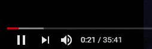

YouTube 소개
- 유튜브는 사용자가 동영상을 자유롭게 올리거나 볼 수 있는 구글의 콘텐츠 호스팅 웹사이트이다.
- 세계 최대 규모의 비디오 플랫폼으로, 명칭은 사용자를 가리키는 '유'(You, 당신)와 미국 영어에서 텔레비전의 별칭인 '튜브(tube)'의 합성이다.
- 과거 텔레비전이 브라운관(Cathode-Ray Tube, CRT)를 사용했기 때문에 텔레비전을 미국 영어에서 다른 말로 '튜브'라 부른다.
- 즉 '유튜브'라는 명칭의 뉘앙스는 '당신을 위한 텔레비전', '당신이 곧 텔레비전' 정도이다. 네모난 유튜브 아이콘의 끝부분은 둥글게 깎여 있고 각 변은 끝부분보다 볼록하게 나와 있는데 옛 텔레비전에 쓰였던 브라운관의 시각상 특징을 아이콘으로 디자인한 것이다.
- 일명 '너' 튜브로도 통용된다.
유튜브 역사
- 2005년 2월 14일 밤에 서비스를 개시하였고 그 해 4월 23일에 유튜브 첫 동영상인 Me at the zoo가 업로드 되었다.
- 이전에도 AVI나 MPG를 생으로 돌리는 사이트가 있기는 했지만, 이 방식은 서버 측에 엄청난 트래픽 부담을 주고 사용자의 PC의 사양에도 큰 영향을 미치게 때문에 동영상 컨텐츠는 웹상에서 널리 쓰이지 못했다.
- 이런 환경에서 유튜브는 영상을 플래시로 재생하는 기술을 통해 영상을 간편하게 공유 가능하게끔 해서 대박을 치게 되었다.
- 하지만, 전 세계에서 엄청난 수의 사람들이 마구 마구 영상을 올려대자 아무리 트래픽을 낮췄다고 해도 유튜브도 서버가 버텨 내지 못하고 있으며 광고 도배해대는 후발 주자들과는 달리 수익 모델이 불확실했기 때문에 구글이 공식으로 인수하고 나서도 한동안 적자를 봤다.
- 인수된 후에도 2009년까지 적자를 연간 약 450,000,000달러 수준(약 500,000,000,000원 정도)을 기록하다가 2010년을 기점으로 흑자로 돌아섰다고 한다.
YouTube 서비스
Youtube TV
- 2017년 2월 유튜브가 시작한 실시간 TV스트리밍 프로그램이다.
- 넷플릭스와 비슷한 개념이지만 유튜브 프리미엄 전용으로 제작된 프로그램 뿐만 아니라 메이저 방송사의 프로그램도 시청할 수 있다.
- 요금은 미국기준 월 50달러이며 한달동안 무료로 이용해 볼 수 있다.
- 한 명이 결제를 하면 5명을 초대해 최대 6명의 구글계정이 이용할수 있다.
- 방송시장의 흐름이 공중파/케이블에서 인터넷 스트리밍으로 옮겨감에 따라 유튜브가 런칭한 것으로 보이며 ABC, CBS, THE CW, FOX, NBC등 미국의 거의 모든 메이저 방송사들의 방송을 시청할수 있고,
- 플랫폼에 상관없이 어디서든 편하게 시청가능하여 현지에선 케이블TV의 대안으로 떠오르는 중이다.
Youtube Music
- 유튜브에 올라온 음원, 뮤직비디오 등 음악 관련 미디어를 중심적으로 볼 수 있는 서비스이다.
- 웹, 안드로이드 앱, iOS 앱으로 서비스를 제공하고 있다. 유튜브 뮤직 프리미엄 또는 유튜브 프리미엄에 가입하면 광고 없이 노래 듣기, 모바일에서 백그라운드 재생, 오프라인으로 다운로드 오디오만 듣기 등이 가능하다.

YouTube 기능
- 일시정지/재생 
- 이전/다음 영상
- 앞뒤 건너뛰기
- 소리조절/음소거
- 자막
- 재생 속도 설정
- 미니플레이어 활성화
- 영화관 모드
-
최초 공개 시작 전
공개 시청 페이지가 만들어지고 이후에 동영상은 이 시청 페이지에서 최초 공개됩니다.
알림 수신 설정(종 모양 아이콘)을 한 시청자에게 최초 공개 시작 30분 전에 시청 알림을 보냅니다.
시작 시 두 번째 알림을 전송하여 시청자에게 최초 공개 시작을 알립니다.
댓글, 실시간 채팅, Super Chat(사용 설정한 경우)으로 시청자와 소통할 수 있습니다.
-
최초 공개를 시작할 때
최초 공개 시작 처음 2분 동안 카운트다운이 표시됩니다.
카운트다운이 끝나면 시청자가 실시간으로 동영상을 함께 시청합니다.
스트리밍하는 동안 시청자가 스트림을 앞으로 이동할 수 없지만 뒤로는 이동할 수 있습니다.
현재 시청자 수를 보여주는 동시 시청자 수가 표시됩니다.
댓글, 실시간 채팅, Super Chat(사용 설정한 경우)으로 시청자와 소통할 수 있습니다.
-
최초 공개 종료 후
동영상이 일반 업로드와 같이 채널에 표시됩니다.
시청자는 최초 공개 종료 후에 채팅 다시보기에서 최초 공개 채팅을 볼 수 있습니다.
언제든지 채팅을 사용 중지할 수 있습니다.
- 링크를 이용하여 공유한다 주소창의 링크를 복사하거나 '공유'버튼을 누르고 링크를 복사하거나 다양한 매체를 통해 전달할 수 있다.
- HTML의 소스 코드를 붙여넣어 자신의 사이트에 띄운다. '공유'버튼을 누르고 '퍼가기'버튼을 누른다. 이때 '퍼가기' 버튼 같은 경우는 크리에이터가 '퍼가기'를 허용 했을 때만 표시된다. 퍼가기 옵션을 적절히 선택하고 소스 코드를 복사한 후 자신의 사이트에 붙여넣으면 된다.
영상 플레이어 기능


영상 최초공개

영상 공유

추천 노래 영상들